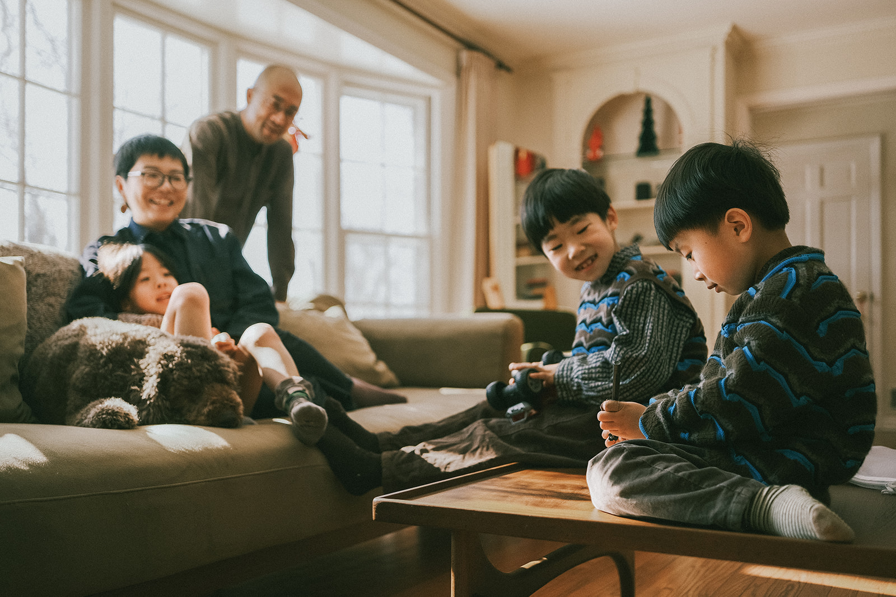

What to Expect
A relaxed, child-led session where everyone can be themselves. No stiff posing — just natural interactions, movement, and real emotions.
From wardrobe guidance to location selection, I’ll guide you through every step so you can simply show up and enjoy time with your family.
PerfectFor
- Families with young children
- Growing families wanting to document milestones
- Parents who value candid, emotional photography



Lifestyle Family Photography In New Jersey
Looking for a family photographer in New Jersey? I specialize in natural, lifestyle family photography that captures authentic connection and emotion. Whether you’re looking for outdoor family photos, in-home sessions, or candid family portraits, this experience is designed to feel effortless and meaningful.


Ready To Book